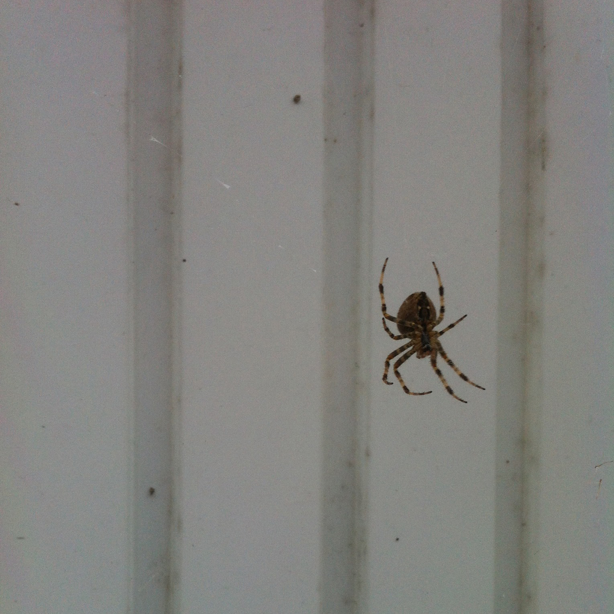
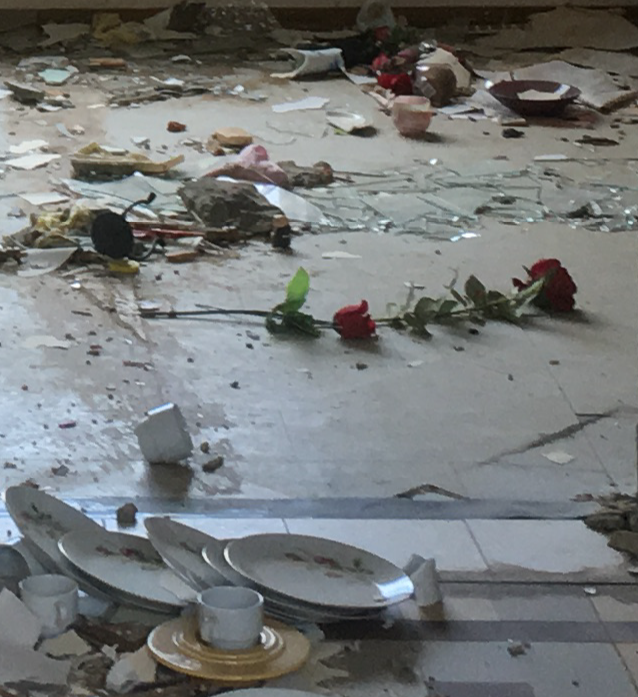
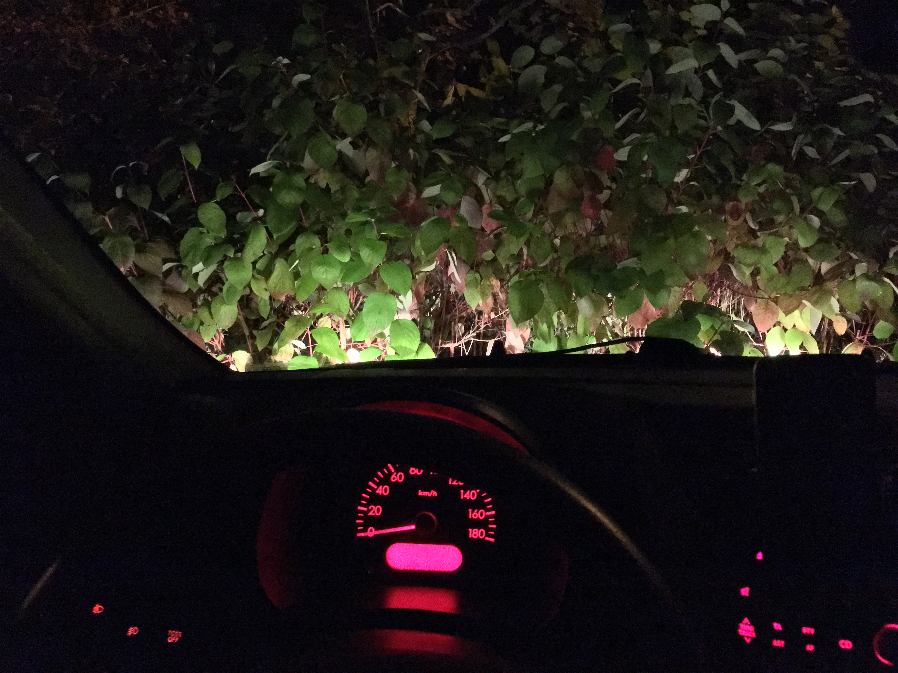
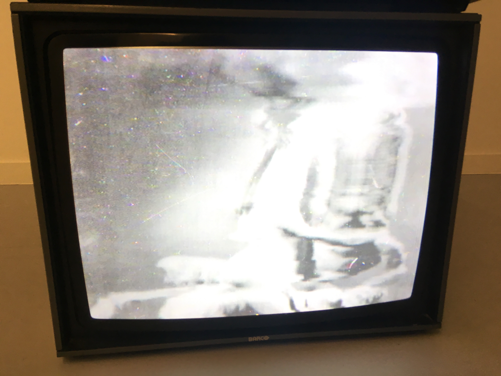
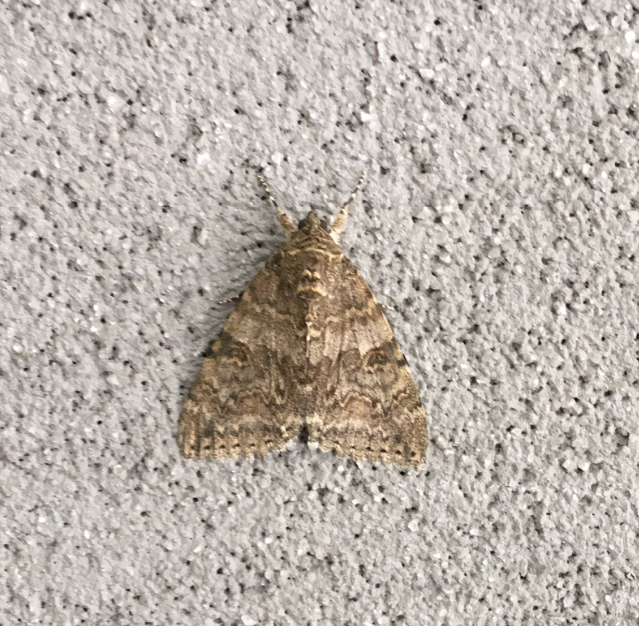
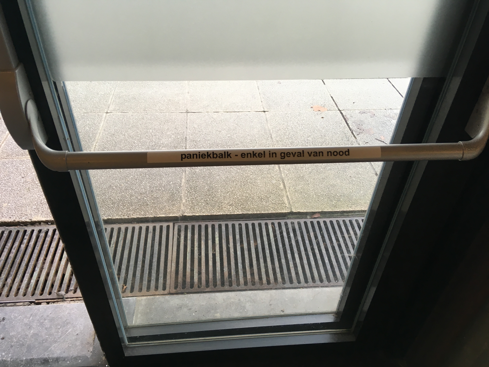

/\/\/\/\/\/\/\/\/\/\/\/\/\/\/\/\/\/\/\/\/\/\/\/\/\/\/\/\/\/\/\/\/\/\/\/\/\/\/\/\/\/\/\/\/\/\/\/\
Wednesday, January 17, 2021
with Acasta Gneiss

- No Tracklist Provided
-
/\/\/\/\/\/\/\/\/\/\/\/\/\/\/\/\/\/\/\/\/\/\/\/\/\/\/\/\/\/\/\/\/\/\/\/\/\/\/\/\/\/\/\/\/\/\/\/\
Wednesday, January 13, 2021
with LY Foulidis
- No Tracklist Provided
-
/\/\/\/\/\/\/\/\/\/\/\/\/\/\/\/\/\/\/\/\/\/\/\/\/\/\/\/\/\/\/\/\/\/\/\/\/\/\/\/\/\/\/\/\/\/\/\/\
Tuesday, November 25, 2020
with Acasta Gneiss
- Tracklist
-
- K. Leimer - Art and Science (Excerpt)
- Yumiko Morioka - Moon Road
- Emily A. Sprague - Piano Two (Mount Vision)
- Sofie Birch - Hills Bells Mother
- Moss King - Cool Off
- Javier Segura - Secuencia Filmica
- Sarah Louise - Silent Snow
- Casper Gottlieb - Untitled
- Danny Paul Grody - Well Wisher
- Gray D'Aboukir - Unchained
- Haron - Lotuseter
- Stars of the Lid - A Meaningful Moment Through a Meaning (less) Process
- Ana Roxanne - Suite pour l'invisible
/\/\/\/\/\/\/\/\/\/\/\/\/\/\/\/\/\/\/\/\/\/\/\/\/\/\/\/\/\/\/\/\/\/\/\/\/\/\/\/\/\/\/\/\/\/\/\/\
Tuesday, October 27, 2020
with Lawrence Foley
- No Tracklist Provided
-
/\/\/\/\/\/\/\/\/\/\/\/\/\/\/\/\/\/\/\/\/\/\/\/\/\/\/\/\/\/\/\/\/\/\/\/\/\/\/\/\/\/\/\/\/\/\/\/\
Monday, September 21, 2020
with LY Foulidis

- Tracklist
-
- Olivier Messiaen - Oraison
- Driftmachine - Blind Signal Box
- Todd Barton - Being and Time
- Terry Riley & Don Cherry - Untitled I
- Nathan Moody - Rose
- David Coulter, Julia Kent &
Seb Rochford - From Isolation 6 01 - Ennio Morricone - La Bambola (Veruschka OST)
- Popol Vuh - Höre, der du wagst (Nosferatu OST)
- Benge - 1982 PPG Wave
- Jonathan Fitoussi and Clemens Hourrière - Drum Circle
- Max Loderbauer, Claudio Puntin,
Samuel Rohrer - Parton's Double Vision - Atoris (H.Takahashi, Yudai Osawa, Kohei Oyama) - Healing Spring
- Moebius - Immerhin
- OCA - I Am Strong, I Am At Peace
- Hans-Joachim Roedelius - Skizze 3 "By This River"
- Soundwalk Parc Dudenpark
- CV & JAB - Rock House with Door
- Soundwalk Germoir / Mouterij - Giststraat / Rue de la Levure
- Suzanne Ciani - Denali
- Dorothy Carter - Along The River
- Bitchin Bajas - Angels and Demons at Play
- Hainbach - Light Splitting
/\/\/\/\/\/\/\/\/\/\/\/\/\/\/\/\/\/\/\/\/\/\/\/\/\/\/\/\/\/\/\/\/\/\/\/\/\/\/\/\/\/\/\/\/\/\/\/\
Wednesday, May 20, 2020
with Polyvalente Ruimte
- No Tracklist Provided
-
/\/\/\/\/\/\/\/\/\/\/\/\/\/\/\/\/\/\/\/\/\/\/\/\/\/\/\/\/\/\/\/\/\/\/\/\/\/\/\/\/\/\/\/\/\/\/\/\
Thursday, April 16, 2020
with Acasta Gneiss

- Tracklist
-
- Ana Roxanne - Slowness
- Green House – Parlor Palm
- Anthony Naples – Alto
- Lorad Group - Lavoro Quotidiano
- Dang Olsen Dream Tape – Hi Breath
- Transmuteo - Zone Temple
- Marco Sterk – Temple on a road
- Jonny Nash – Ding Repair
- Jon Appleton & Don Cherry – DON
- Nico – Camera Obscura
- Tkil – Etka (Excerpt)
- Lithops - Uni Umit 1
- Mist – La Résistance Individuelle (Part 1)
- Imaginary Softwoods – Coconut Seranade
/\/\/\/\/\/\/\/\/\/\/\/\/\/\/\/\/\/\/\/\/\/\/\/\/\/\/\/\/\/\/\/\/\/\/\/\/\/\/\/\/\/\/\/\/\/\/\/\
Thursday, April 02, 2020
with LY Foulidis
- Tracklist
-
- Electric Capablanca - Maroczy Bind
- X.Y.R - Deep Diver
- Unknown Mirrors - New Green
- Pierre Bastien - Rail at a Liar
- Dead Can Dance - Windfall
- Stan Tracey Quartet - Starless And Bible Black
- Linus Vandewolken - Jagers in de sneeuw
- Bitchin Bajas and Natural Information Society - Anemometer
- Waclaw Zimpel - Sine Tapes
- Minae Minae - Vertilger
- Phantom Horse - Vloid
- Pittsburgh Modular - Voltage Lab Explorer Soundtrack 1
- Kilchhofer - Tusk
- Mark Vernon - The object invoked
has disconnected from it's host - Hendrik Lasure warm bad - Mountains And Woods
- Visible Cloaks - Painter_Stream
- Kate NV - OAK
- Yialmelic Frequencies - Play Ponds
- Luke Abbott & Jack Wyllie - Etxeberri
/\/\/\/\/\/\/\/\/\/\/\/\/\/\/\/\/\/\/\/\/\/\/\/\/\/\/\/\/\/\/\/\/\/\/\/\/\/\/\/\/\/\/\/\/\/\/\/\
Wednesday, March 18, 2020
with Acasta Gneiss
- Tracklist
-
- Sendai Threnody - Monty Adkins
- Orion Molecular Cloud - Ben Bertrand
- If Anything Is (II) - Britton Powell
- One Bee - Clarice Jensen
- Der Sterbende auf der Brücke - Jürgen Knieper
- Moments - Steven Brown & Benjamin Lew
- Blink - Sonic Youth
- Track3a(2waynice) - Keith Fullerton Whitman
- La Maison des 5 éléments - Dominique Lawalrée
- Titre - Amelia Tabeï
- Chant IV - Face A (Excerpt) - Golem Mechanique
- Path 5 (Delta) - Max Richter